Memory tab
The Memory tab becomes visible for supported devices to configure and visualize memory regions for each core in the device. Similar to other tabs, there is a Resource section to enable/disable the Memory, as well as the Protection section for the Memory Protection Controllers (MPC), Memory Protection Units (MPU), and Security Attribution Units (SAU). This tab allows you to enter one or more Name(s) for the resource. It also shows the selected Personality where applicable.
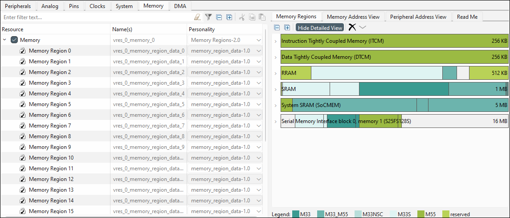
Memory Regions subtab
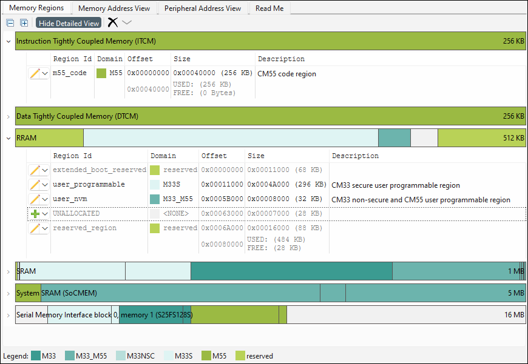
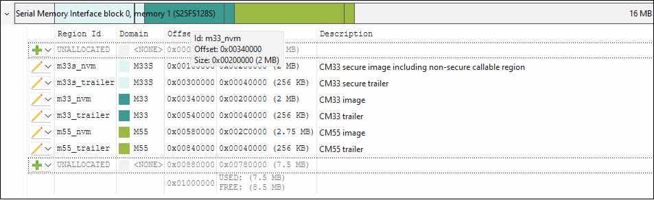
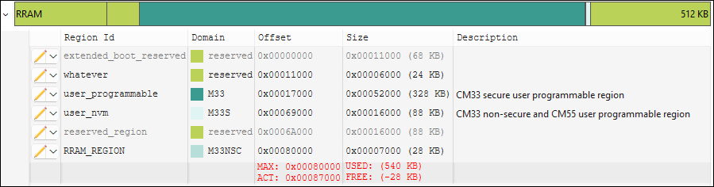
Show/hide detailed view
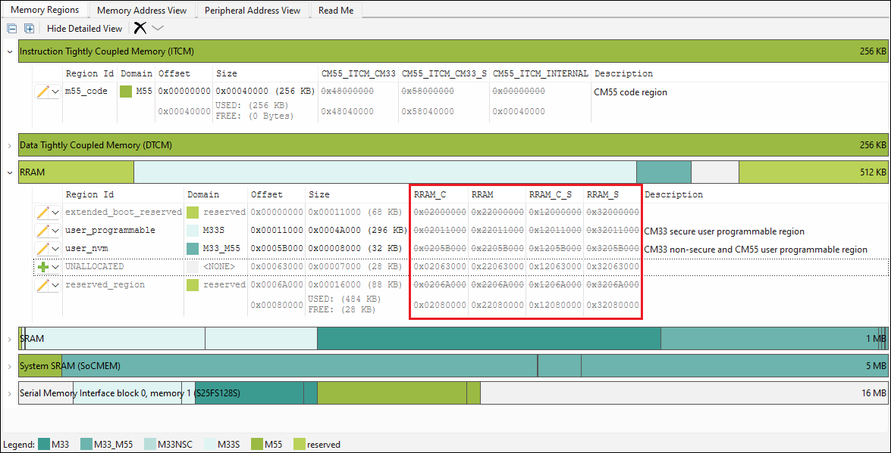
Add/edit memory allocations
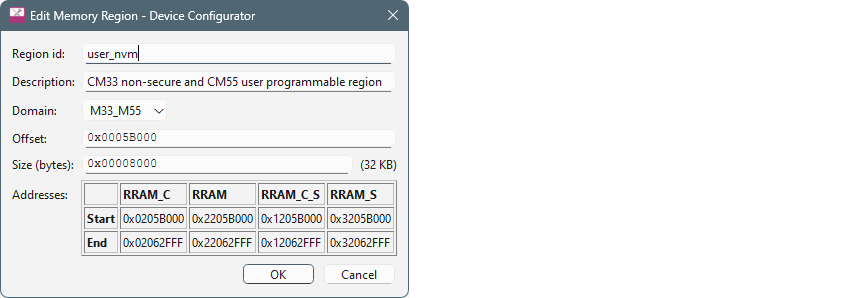
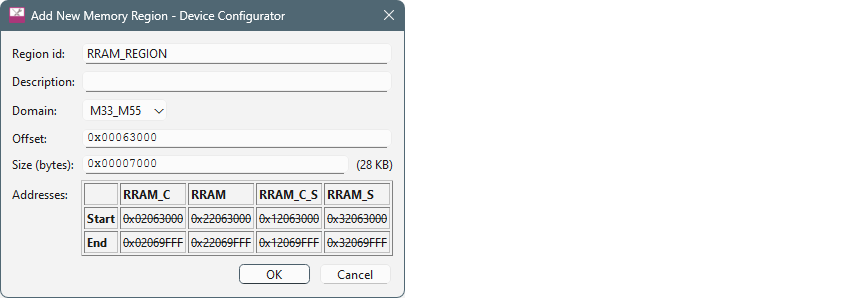
Once the dialog is open, enter values:
- As needed, type the name of the Region id.
- Select a Domain from the pull-down menu.
- Enter the Offset and Size.
The Size entry allows for hex or decimal entry. It also accepts specifying units, which will always be converted to bytes. Units are case insensitive and can be entered as follows:
- bytes or b = byte
- kb or k = kilobyte (1 KB = 1,024 Bytes)
- mb or m = megabyte (1 MB = 1024KB = 1,048,576 Bytes)
- gb or g = gigabyte (1 GB = 1024MB = 1,048,576 KB = 1,073,741,824 Bytes)
- tb or t = terabyte (1 TB = 1024 GB = 1,048,576 MB = 8,388,608 KB = 1,099,511,627,776 Bytes)
- pb or p = petabyte (1 PB = 1024 TB = 1,048,576 GB = 1,073,741,824 MB = 1,099,511,627,776 KB = 1,125,899,906,842,624 Bytes)
- eb or e = exabyte (1 EB = 1024 PB = 1,048,576 TB = 1,073,741,824 GB = 1,099,511,627,776 MB = 1,125,899,906,842,624 KB = 1,152,921,504,606,846,976 Bytes)
- zb or z = zettabyte (1 ZB = 1024 EB = 1,048,576 PB = 1,073,741,824 TB = 1,099,511,627,776 GB = 1,125,899,906,842,624 MB = 1,152,921,504,606,846,976 KB = 1,180,591,620,717,411,303,424 Bytes)
- yb or y = yottabyte (1 YB = 1024 ZB = 1,048,576 EB = 1,073,741,824 PB = 1,099,511,627,776 TB = 1,125,899,906,842,624 GB = 1,152,921,504,606,846,976 MB = 1,180,591,620,717,411,303,424 KB = 1,208,925,819,614,629,174,706,176 Bytes)
If there are obvious errors, the dialog will not allow you to click OK. There may also be an error message.
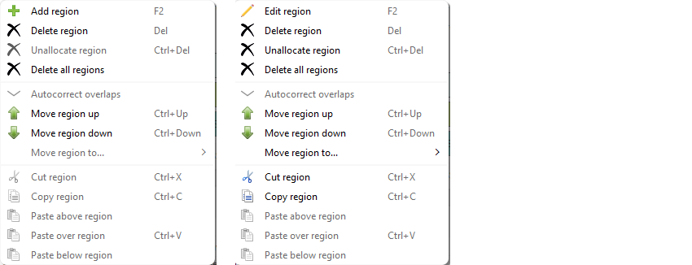
If you prefer, use the keyboard shortcuts defined on the menus.
Rearrange memory regions
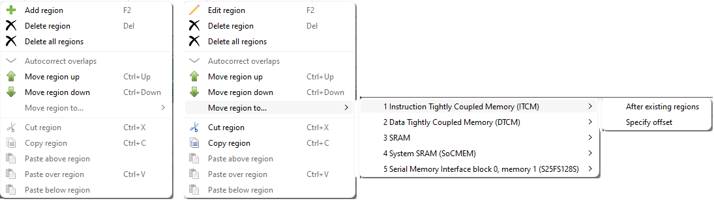
When moving a region, there are two options: After existing regions and Specify offset.
Use the Legend

How to find out which region the main goes in from the main ld
Code that doesn't have an explicit section name goes in .text (or .text.function_name when using -ffunction-sections). Search for .text in the linker script or search the .map file for the function name.
How to read the build output and associate it with the regions defined in the tool
For each project in an application, “make build” will display a summary of the output sections:
Memory region Used Size Region Size %age Used
m55_data_INTERNAL: 3796 B 256 KB 1.45%
m55_code_INTERNAL: 12024 B 256 KB 4.59%
user_nvm_C: 0 GB 32 KB 0.00%
m55_nvm: 24900 B 2816 KB 0.86%
m55_trailer: 0 GB 256 KB 0.00%
m55_code_secondary: 0 GB 256 KB 0.00%
m55_data_secondary: 2800 KB 2800 KB 100.00%
m33_m55_shared: 256 KB 256 KB 100.00%
gfx_mem: 0 GB 1808 KB 0.00%
m33_data: 0 GB 256 KB 0.00%
m33s_allocatable_shared: 0 GB 4 KB 0.00%
m33_allocatable_shared: 0 GB 4 KB 0.00%
m55_allocatable_shared: 1088 B 4 KB 26.56%
The “.map” file generated by the linker contains details about which input sections the linker placed into each output section. To find the memory region corresponding to each output section, search for the memory region that contains the section's address.
.appText_1 0x60580400 0x1f70
...
.text.main 0x6058094c 0x14 build/APP_KIT_PSE84_EVAL/Debug/main.o
0x6058094c main
.text.Cy_PDL_Init
0x60580960 0xc build/APP_KIT_PSE84_EVAL/.../cy_device.o
0x60580960 Cy_PDL_Init
- .appText_1 is the output section name. It is followed by the output section start address (0x60580400) and the output section total size (0x1f70).
- .text.main is the input section name. It is followed by its address (0x6058094c) and size (0x14).
Initialized data in volatile memory also consumes space in a non-volatile memory.
.data 0x20000000 0x24 load address 0x60582658The .data section consumes 0x24 bytes at both its writable address 0x20000000 and its non-volatile address 0x60582658.
How to define a new region for some data buffer variable
For uninitialized data:
- In the memory tab, add a new region named “CUSTOM_DATA” in a writable memory such as SRAM.
- In the linker script, add a section for the region:
GNU ld or LLVM lld
.custom_data : { *(.custom_data*) } >CUSTOM_DATAarmlink
LOAD_CUSTOM_DATA CYMEM_CM55_0_CUSTOM_DATA_START CYMEM_CM55_0_CUSTOM_DATA_SIZE { EXEC_CUSTOM_DATA CYMEM_CM55_0_CUSTOM_DATA_START UNINIT CYMEM_CM55_0_CUSTOM_DATA_SIZE { *(.custom_data*) } }ilinkarm
do not initialize { section .custom_data* } place in CUSTOM_DATA { section .custom_data* } - In the source code, assign the variable to the section (GCC, armclang, or
iccarm)
__attribute__((section ".custom_data")) uint32_t data_buffer[DATA_BUFFER_COUNT];
For data in volatile memory
For data in volatile memory that requires run-time initialization, the linker script must configure a non-volatile location to initialize the data. For this example, create a region named “CUSTOM_CODE” in a non-volatile memory.
GNU ld or LLVM lld
.custom_data :
{
*(.custom_data*)
} >CUSTOM_DATA AT>CUSTOM_CODE
.copy.table :
{
/* ... */
LONG(LOADADDR(.custom_data))
LONG(ADDR(.custom_data))
LONG(SIZEOF(.custom_data)/4)
/* ... */
}
armlink
LOAD_CUSTOM_CODE CYMEM_CM55_0_CUSTOM_CODE_START CYMEM_CM55_0_CUSTOM_CODE_SIZE
{
EXEC_CUSTOM_DATA CYMEM_CM55_0_CUSTOM_DATA_START CYMEM_CM55_0_CUSTOM_DATA_SIZE
{
*(.custom_data*)
}
}
ilinkarm
initialize by copy { section .custom_data* }
place in CUSTOM_DATA { rw section .custom_data* }
place in CUSTOM_CODE { ro section .custom_data* }
How to define a new region for the code and then assign code to the particular region
- In the memory tab, add a new region named “CUSTOM_CODE” in a non-volatile memory such as RRAM.
- In the linker script, add a section for the region:
GNU ld or LLVM lld
a. .custom_code : { *(.custom_code*) } >CUSTOM_CODEarmlink
LOAD_CUSTOM_CODE CYMEM_CM55_0_CUSTOM_CODE_START CYMEM_CM55_0_CUSTOM_CODE_SIZE { EXEC_CUSTOM_CODE +0 { *(.custom_code*) } }ilinkarm
place in CUSTOM_CODE { section .custom_code* } - In the source code, assign the variable to the section (GCC, armclang, or
iccarm)
__attribute__((section ".custom_code")) void custom_code_function1(void);
How to assign a function or variable into a custom memory section
Variables and functions may be assigned to a section using the section attribute. The linker script must assign the section to an output section.
__attribute__((section ".custom_data"))
uint32_t data_buffer[DATA_BUFFER_COUNT];
__attribute__((section ".custom_code"))
void custom_code_function1(void);
How to modify the linker to include a specific file into a custom memory section
GNU ld or LLVM lld
.custom_code :
{
main.o(.text* .rodata*)
} >CUSTOM_CODE
.custom_data :
{
main.o(.data*)
main.o(.bss*)
} >CUSTOM_DATA AT>CUSTOM_CODE
armlink
LOAD_CUSTOM_CODE CYMEM_CM55_0_CUSTOM_CODE_START CYMEM_CM55_0_CUSTOM_CODE_SIZE
{
EXEC_CUSTOM_CODE +0
{
main.o(+RO)
}
EXEC_CUSTOM_DATA CYMEM_CM55_0_CUSTOM_DATA_START CYMEM_CM55_0_CUSTOM_DATA_SIZE
{
main.o(+RW,+ZI)
}
}
ilinkarm
place in CUSTOM_CODE { ro object main.o }
place in CUSTOM_DATA { rw object main.o }
How to modify the linker to include an entire middleware library into a custom memory section
The linker script example assigns all of the code and data from object files matching mtb_hal_*.o to the .custom_code and .custom_data sections respectively. If the middleware’s object files cannot be described in a single pattern, it may be necessary to use multiple patterns.
GNU ld or LLVM lld
.custom_code :
{
mtb_hal_*.o(.text* .rodata*)
} >CUSTOM_CODE
.custom_data :
{
mtb_hal_*.o(.data*)
mtb_hal_*.o(.bss*)
} >CUSTOM_DATA AT>CUSTOM_CODE
armlink
LOAD_CUSTOM_CODE CYMEM_CM55_0_CUSTOM_CODE_START CYMEM_CM55_0_CUSTOM_CODE_SIZE
{
EXEC_CUSTOM_CODE +0
{
mtb_hal_*.o(+RO)
}
EXEC_CUSTOM_DATA CYMEM_CM55_0_CUSTOM_DATA_START CYMEM_CM55_0_CUSTOM_DATA_SIZE
{
mtb_hal_*.o(+RW,+ZI)
}
}
ilinkarm
place in CUSTOM_CODE { ro object mtb_hal_*.o }
place in CUSTOM_DATA { rw object mtb_hal_*.o }
How to re-balance the memory between the cores based on the build output
This is highly dependent on the needs of the customer’s application. Solutions may include:
- Resizing existing regions
- Double-click on the region to open the Edit dialog.
- Update the Size. If the region needs to be moved, also update the Offset.
- Moving existing regions to another memory
- Updating linker scripts to place code or data in different regions
How to switch between internal and external memory
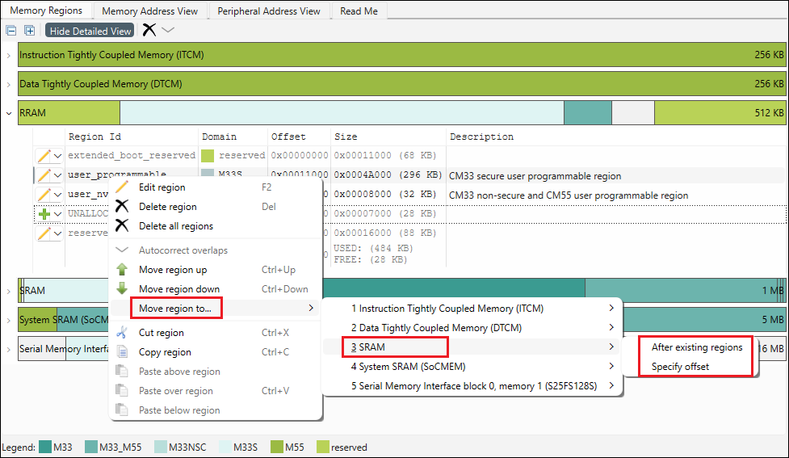
- If you want to let the tool just place it at the end of the other regions in the destination, select After existing regions.
- If you want to specify exactly what offset to put it at, then select
Specify Offset. Then enter the value in the
dialog.
Memory Address View subtab
The Memory Address View subtab displays the security status and access permissions enforced by the IDAU, SAU, and MPC at a given address or memory region. The Core pull-down allows you to switch to other cores, and the Search shows all occurrences of an entered term with Forward and Back buttons to jump to the next or previous term. This subtab also contains zoom commands.
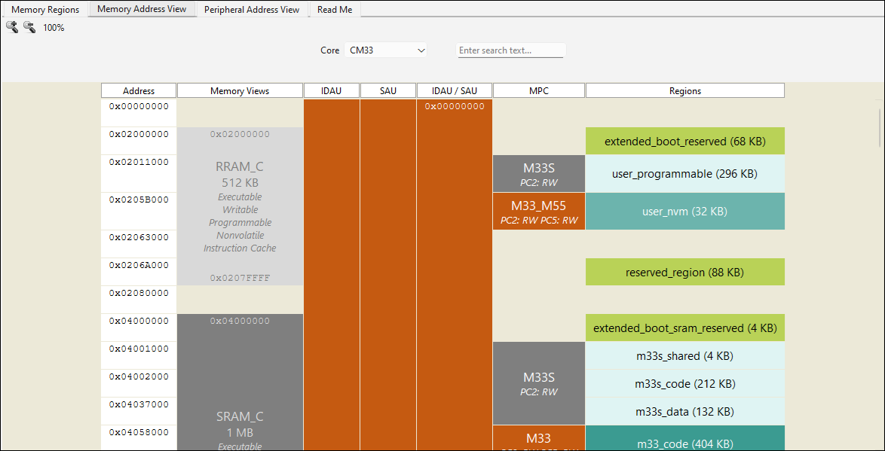
- The Address column shows the start address of every segment shown in the other columns.
- The Memory Views column depicts all the physical memories and external memory reservations for the device, along with the size and capabilities for each. Possible capabilities include Executable, Writable, Readable, Programmable, Nonvolatile, Secure, and Instruction Cache.
- The IDAU column shows the security across all address ranges determined by the device's IDAU. Each range lists a security status code and corresponding background color (S/green for Secure, NS/orange for Non-Secure, NSC/yellow for Non-Secure Callable, and X/gray for Exempted) and the address range size.
- The SAU column depicts the security across all address ranges as configured in the designs SAU entries. Each range lists a security status code and corresponding background color (S/green for Secure, NS/orange for Non-Secure, NSC/yellow for Non-Secure Callable) and the address range size.
- The IDAU / SAU column depicts the effective security across all address ranges combining the (fixed) device's IDAU and configured SAU entries. Each range lists a start address, end address, security status code and corresponding background color (S/green for Secure, NS/orange for Non-Secure, NSC/yellow for Non-Secure Callable, and X/gray for Exempted) and the address range size.
- The MPC column shows the address ranges that will be under MPC control according to the configured Protection Domains and access details for each. Each range lists the name of the governing Protection Domain and a background color corresponding the range's security (S/green for Secure in the context of a secure core or S/gray in the context of a non-secure core, NS/orange for Non-Secure, NSC/yellow for Non-Secure Callable) and the access permissions (R for Read, W for Write) for each Protection Context granted by the Protection Domain. E.g., the access permission string "PC2: RW PC5: RW" denotes read and write access is granted to Protection Contexts PC2 and PC5.
- The Regions column shows the memory regions that are configured in the Memory Regions subtab. For each region, the region id and size is shown, and has the same user-configured color coding from the Memory Regions tab.
In each of the columns, if the described content is not applicable – either because there is no such configuration or the device doesn't support it – the column will be omitted.
Peripheral Address View subtab
The Peripheral Address View subtab displays all peripheral regions and locations and (where used) the access permissions enforced by the PPC. The Core pull-down allows you to switch to other cores, and the Search shows all occurrences of an entered term with Forward and Back buttons to jump to the next or previous term. This subtab also contains zoom commands.
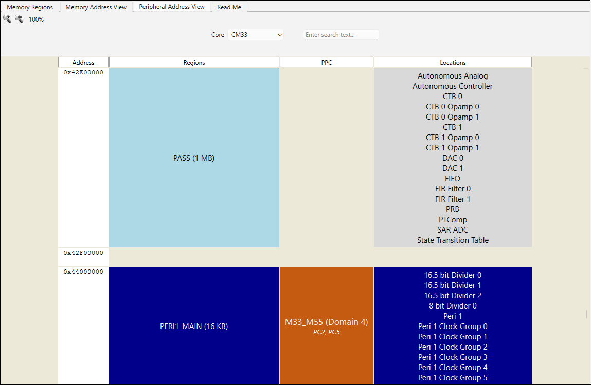
- The Address column shows the start address of every segment shown in the proceeding columns.
- The Regions column depicts all of the peripheral regions defined for the device. There is no meaning in the background colors of these regions; the colors simply alternate between two shades of blue for visual contrast.
- If a PPC is configured, the PPC column shows the address ranges that will be under PPC control according to the configured Protection Domains and access details for each. Each range lists the name of the governing Protection Domain and a background color corresponding the range's security (S/green for Secure in the context of a secure core or S/gray in the context of a non-secure core, NS/orange for Non-Secure, NSC/yellow for Non-Secure Callable) and the Protection Contexts having access to the peripherals in the region per the Protection Domain.
- The Locations column show all of the peripheral locations in the corresponding region. If there is no configured access to the locations in this region, they will be depicted with a gray background; if at least one Protection Context is granted access to the region and its locations, it will have the same blue or light blue coloring in the corresponding region.
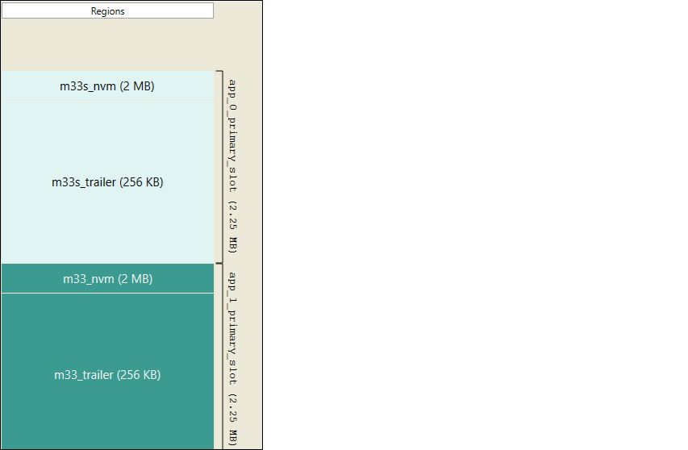
In the Memory Regions subtab, there is a corresponding table with links to the Solution parameters where the range is defined.
Read Me subtab
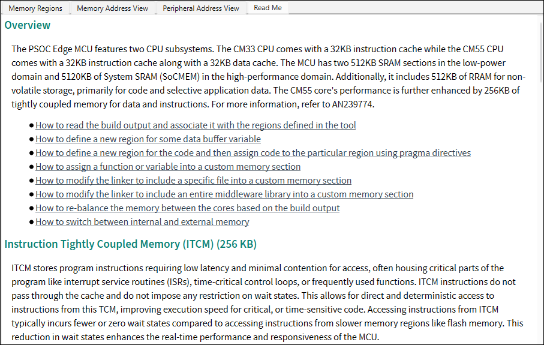
This file provides links to "how to" HTML topics to guide you how to configure memories.